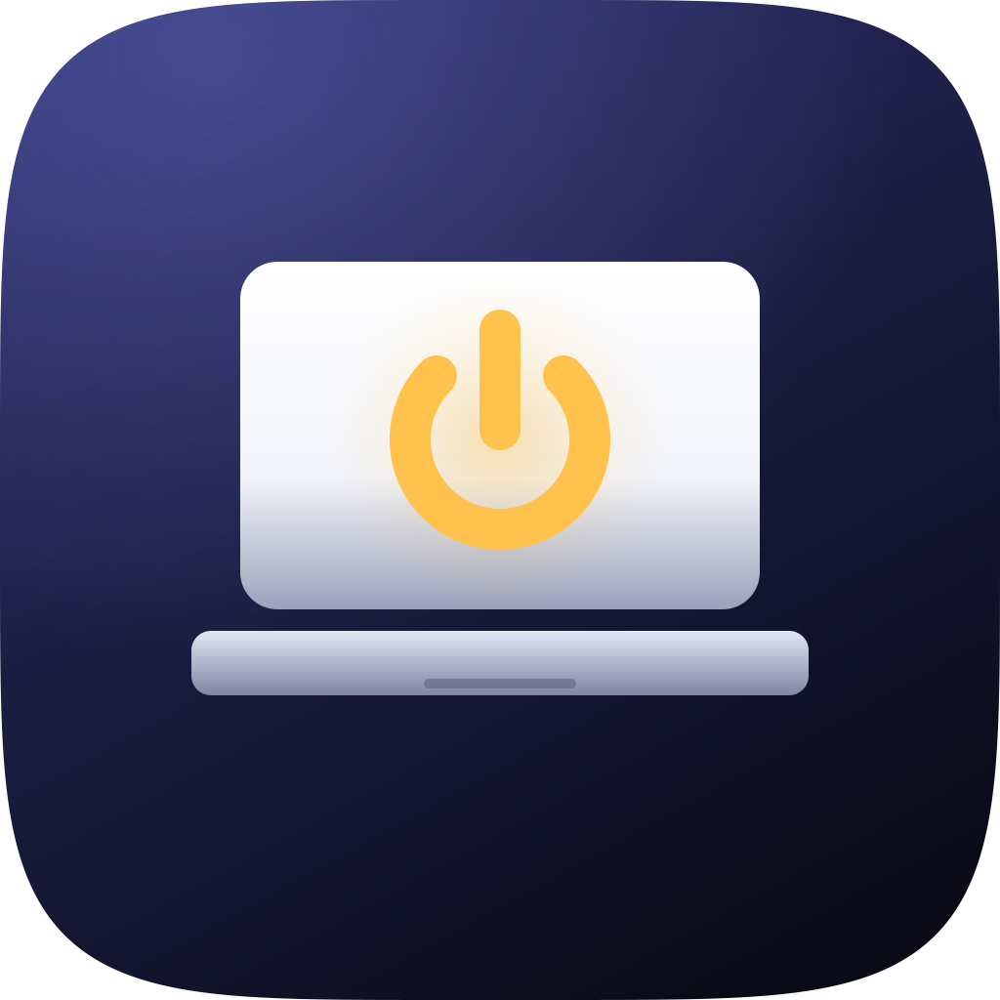

LidGuard 图标
「合盖，但还醒着」—— 笔记本电脑盖上嵌一个电源符号
应用图标（macOS App Icon）

256 · Dock / 启动台
菜单栏图标（Template Image）
LidGuard
2h14m

LidGuard
2h14m
菜单栏版本刻意去掉了内部电源符号，只保留粗轮廓的合盖笔记本 ——
18pt 下描边加内部细节会糊成一团。语义上的「还醒着」交给菜单栏角标的时长和图标颜色（绿=已武装生效、橙=已武装但电池供电）。
菜单栏图标为纯黑单色模板图，系统会按浅色／深色菜单栏自动反色。